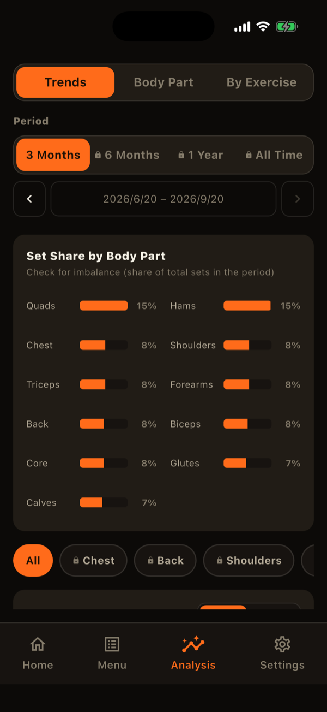
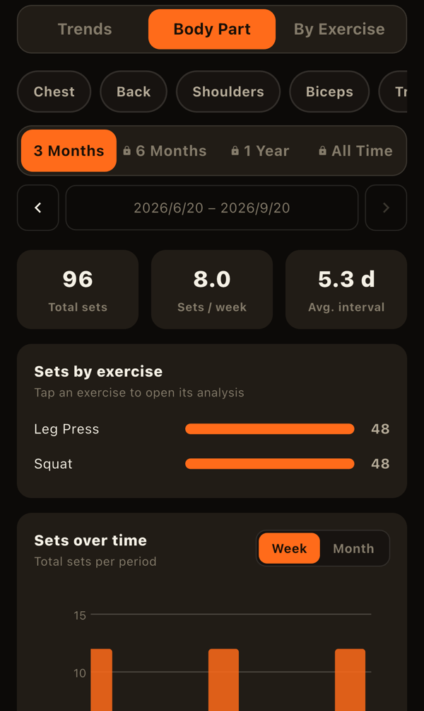
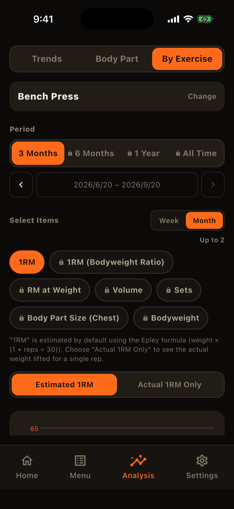
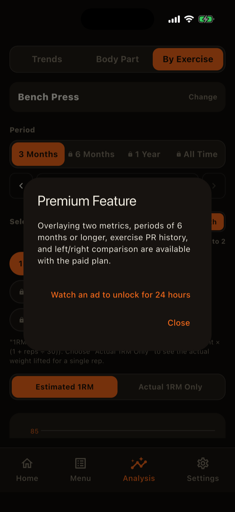

The Analysis tab helps you look back on your records with charts. Use the segments at the top to switch between "Trends," "Body Part," and "By Exercise," ordered from the widest view to the narrowest. You can also swipe left or right to switch.
Choosing a period
All three views offer 3 months, 6 months, 1 year, or all time, plus a custom date range. For 3 months, 6 months, and 1 year you can page to earlier or later periods with the arrows.
Trends: the whole picture
- Share of sets by body part: horizontal bars showing what percentage of your sets went to each body part in the period.
- Record trends: sets, workouts, time, and frequency, by week or by month. You can overlay up to two measures. "Frequency" means how many days apart your workouts are. You can also filter by body part.

Body Part: one part in depth
Pick one body part to see its sets.
- A summary: total sets, average sets per week, and average gap between sessions
- Sets per exercise (tap one to open its exercise analysis)
- Share of sub-groups and how sets change over time (an exercise that hits several sub-groups has each set split evenly among them)
- Sets overlaid with body measurements for that part

By Exercise: one exercise in depth
After choosing an exercise, pick up to two of these measures to overlay on one chart:
- 1RM: estimated with the Epley formula. You can switch to "actual 1RM only," which uses just single-rep weights.
- 1RM to bodyweight ratio: estimated 1RM divided by body weight.
- Reps at a weight: the most reps you hit at a chosen weight.
- Volume: weight x reps x sets.
- Sets
- Body-part size: the matching measurement from your body stats.
- Body weight
Cumulative amounts such as volume and sets are drawn as bars, and point-in-time values such as 1RM as lines. Tap or long-press the chart to read exact values, and scroll sideways when there are many points.
Below the chart, the PR history lists your best estimated 1RM, actual 1RM, and volume. For exercises tracked left and right separately, you can also see how the difference between sides changes over time.

How sets are counted
Warm-up sets are not counted as sets. The same rule applies to Home's body-part condition and to goals based on sets.
What is free and what is paid
- Free: periods up to 3 months, one measure at a time in exercise analysis, and only "All" in the trends body-part filter.
- Paid: 6 months, 1 year, all time, custom ranges, overlaying two measures, PR history, left/right difference, and filtering trends by body part.
Paid options are still shown with a lock icon, and tapping one explains the plan. In the Analysis tab only, you can also watch an ad to unlock the paid features for 24 hours (once every 30 days).
The exercise detail (progress) screen, opened from the exercise library, also shows estimated 1RM and volume trends and your recent sets. Its period limits follow the same rule (3 months are free).

LiFTY is a workout log you can start using right away, with no account required.
Download on the App Store